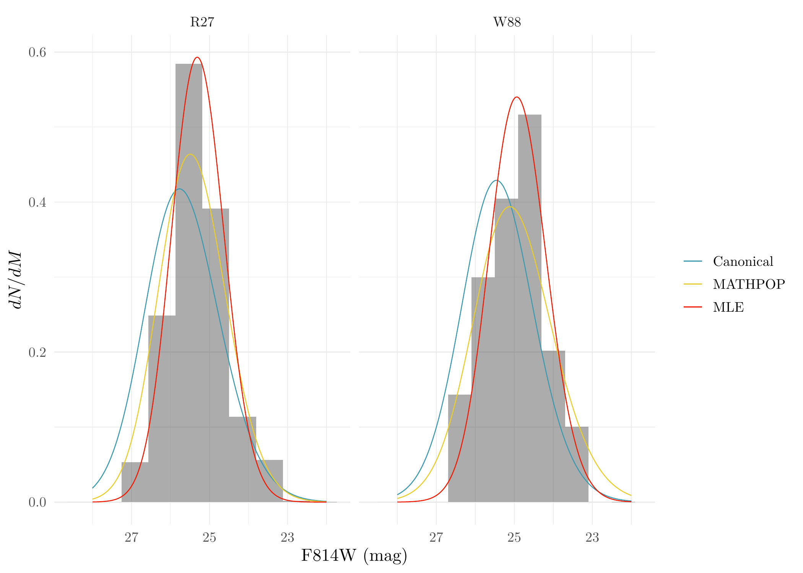

Last updated: 2024-08-09
Checks: 7 0
Knit directory: MATHPOP/
This reproducible R Markdown analysis was created with workflowr (version 1.7.1). The Checks tab describes the reproducibility checks that were applied when the results were created. The Past versions tab lists the development history.
Great! Since the R Markdown file has been committed to the Git repository, you know the exact version of the code that produced these results.
Great job! The global environment was empty. Objects defined in the global environment can affect the analysis in your R Markdown file in unknown ways. For reproduciblity it’s best to always run the code in an empty environment.
The command set.seed(20240702) was run prior to running
the code in the R Markdown file. Setting a seed ensures that any results
that rely on randomness, e.g. subsampling or permutations, are
reproducible.
Great job! Recording the operating system, R version, and package versions is critical for reproducibility.
Nice! There were no cached chunks for this analysis, so you can be confident that you successfully produced the results during this run.
Great job! Using relative paths to the files within your workflowr project makes it easier to run your code on other machines.
Great! You are using Git for version control. Tracking code development and connecting the code version to the results is critical for reproducibility.
The results in this page were generated with repository version 9a1eca9. See the Past versions tab to see a history of the changes made to the R Markdown and HTML files.
Note that you need to be careful to ensure that all relevant files for
the analysis have been committed to Git prior to generating the results
(you can use wflow_publish or
wflow_git_commit). workflowr only checks the R Markdown
file, but you know if there are other scripts or data files that it
depends on. Below is the status of the Git repository when the results
were generated:
Ignored files:
Ignored: .DS_Store
Ignored: .Rhistory
Ignored: .Rproj.user/
Ignored: analysis/.DS_Store
Ignored: code/.DS_Store
Ignored: data/.DS_Store
Ignored: data/GC_prob/.DS_Store
Ignored: data/point_source_data/.DS_Store
Ignored: data/prob_GC_data/.DS_Store
Ignored: data/sim/.DS_Store
Ignored: data/v10acs/.DS_Store
Ignored: data/v10wfc3/.DS_Store
Ignored: data/v11acs/.DS_Store
Ignored: data/v11wfc3/.DS_Store
Ignored: data/v12acs/.DS_Store
Ignored: data/v12wfc3/.DS_Store
Ignored: data/v13acs/.DS_Store
Ignored: data/v13wfc3/.DS_Store
Ignored: data/v14acs/.DS_Store
Ignored: data/v14wfc3/.DS_Store
Ignored: data/v15acs/.DS_Store
Ignored: data/v15wfc3/.DS_Store
Ignored: data/v6acs/.DS_Store
Ignored: data/v6wfc3/.DS_Store
Ignored: data/v7acs/.DS_Store
Ignored: data/v8acs/.DS_Store
Ignored: data/v9acs/.DS_Store
Ignored: data/v9wfc3/.DS_Store
Ignored: source/.DS_Store
Ignored: source/v8wfc3/
Unstaged changes:
Modified: method_compare-tikzDictionary
Note that any generated files, e.g. HTML, png, CSS, etc., are not included in this status report because it is ok for generated content to have uncommitted changes.
These are the previous versions of the repository in which changes were
made to the R Markdown (analysis/GCLF.Rmd) and HTML
(docs/GCLF.html) files. If you’ve configured a remote Git
repository (see ?wflow_git_remote), click on the hyperlinks
in the table below to view the files as they were in that past version.
| File | Version | Author | Date | Message |
|---|---|---|---|---|
| Rmd | 9a1eca9 | david.li | 2024-08-09 | wflow_publish("analysis/GCLF.Rmd") |
| html | 19cfd70 | david.li | 2024-07-15 | Build site. |
| Rmd | 4d88a5a | david.li | 2024-07-15 | wflow_publish("analysis/GCLF.Rmd") |
| html | 9252062 | david.li | 2024-07-15 | Build site. |
| html | 230837c | david.li | 2024-07-15 | Build site. |
| Rmd | 79bc13d | david.li | 2024-07-15 | wflow_git_commit(all = T) |
| html | e750655 | david.li | 2024-07-08 | Build site. |
| html | 8fb288d | david.li | 2024-07-07 | Build site. |
| Rmd | 2e42542 | david.li | 2024-07-07 | wflow_git_commit(all = T) |
| html | 3dee3e9 | david.li | 2024-07-06 | Build site. |
| Rmd | 8efe3a6 | david.li | 2024-07-06 | wflow_git_commit(all = T) |
| html | 8efe3a6 | david.li | 2024-07-06 | wflow_git_commit(all = T) |
| html | dc09c08 | david.li | 2024-07-06 | Build site. |
| html | 64686bd | david.li | 2024-07-06 | Build site. |
| html | eda1cf3 | david.li | 2024-07-06 | Build site. |
| Rmd | 9263f89 | david.li | 2024-07-06 | wflow_publish("analysis/GCLF.Rmd") |
This vignette provides the procedure and code that analyze the GCLFs of R27 and W88, the two UDGs with unusually bright GCLFs.
As always, we first load the packages and read in the data. R27 is within the image V10WFC3, while W88 is in V11ACS.
library(tidyverse)
library(sf)
library(sp)
library(raster)
library(parallel)
library(Rcpp)
library(RcppArmadillo)
library(posterior)
library(coda)
library(loo)
library(xtable)
library(priorsense)
library(ggpubr)
library(wesanderson)
library(reshape2)
library(modeest)
library(MATHPOP)Next we grab the GC magnitudes of GC candidates within \(6\)~kpc of R27, as well as the posterior mode estimates of the GCLF parameters inferred by MATHPOP:
# read in V10WFC3 data
V10WFC <- read_csv('data/prob_GC_data/v10wfc3_pGC.csv')
# transform pixel coordinates to physical
V10WFC <- as.data.frame(V10WFC)
V10WFC[,c('x','y')] <- 62*V10WFC[,c('x','y')]/4400
# UDG locations in V10WFC3
c <- 62*rbind(c(808, 744), c(1930, 2653), c(2695, 2132))/4400
# grab GC candiaates that are within 6 kpc of R27
R27_harris_mag <- filter(V10WFC, (x - c[1, 1])^2 + (y - c[1,2])^2 < 6^2)
R27_harris_mag$p <- rowMeans(R27_harris_mag[,8:507])
R27_harris_mag <- R27_harris_mag %>%
dplyr::select(x, y, M, C, p)
# read in MCMC results fitted for V10WFC3
res_v10wf3 <- readRDS('data/v10wfc3/res_prob_v10wfc3.RDS')
# get the posterior point estimates of the GCLF parameter for R27 from MATHPOP
mu_R27_post <- mlv(res_v10wf3$mu_R27)
sigma_R27_post <- mlv(res_v10wf3$sigma_R27)Next, we conduct a Maximum-likelihood estimation (MLE) using the GC magnitudes of GC candidates within \(6\)~kpc of R27. Note that for simplicity, we do not consider the measurement uncertainty of magnitudes when conducting MLE. Since the GC catalog we are using are probabilistic, we first sample the GC magnitudes based on the probability that a source is a GC, we then obtain the MLE using the the sample magnitude. We repeat this procedure for \(1000\) times and take the average results:
# likelihood function of the GC magnitude distribution for R27
log_lik_mag_R27 <- function(par, M_dat) {
mu <- par[1]
sig <- par[2]
log_lik <- -sum(dnorm(M_dat, mu, sig, log = T) + log(f_cpp(M_dat, 26.52, a = 1.57)) - log(Phi_f_cpp(26.52, mu, sig, a = 1.57)))
return(log_lik)
}
# allocate objects for 1000 iterations of the MLE
res_lik_R27_sim <- matrix(0, nrow = 1000, ncol = 2)
mu_sd_R27 <- numeric(1000)
sig_sd_R27 <- numeric(1000)
p_val_R27 <- numeric(1000)
M_R27 <- c()
# Fit the MLE for 1000 times
set.seed(123456)
for(i in 1:1000){
M_dat <- R27_harris_mag$M[rbernoulli(nrow(R27_harris_mag), p = R27_harris_mag$p)]
M_dat <- M_dat[-sample(1:length(M_dat), 2)]
M_R27 <- c(M_R27, M_dat)
res_i <- optim(c(25, 1), log_lik_mag_R27, M_dat = M_dat,
method = "L-BFGS-B", lower = c(24, 0.5), upper = c(26.7, 1.9), hessian = T)
res_lik_R27_sim[i,] <- res_i$par
mu_sd_R27[i] <- sqrt(solve(res_i$hessian)[1,1])
sig_sd_R27[i] <- sqrt(solve(res_i$hessian)[2,2])
p_val_R27[i] <- pnorm((26.3 - res_i$par[1])/mu_sd_R27[i], 0, 1, lower.tail = F)
}
# Get the average MLE results of the GCLF parameters
mu_R27_lik <- mean(res_lik_R27_sim[,1])
sigma_R27_lik <- mean(res_lik_R27_sim[,2])
# s.e. of the MLE estimates
mean(mu_sd_R27)[1] 0.1698864# p_value under the null hypothesis that the GCLF TO of R27 is the same as the canonical value
exp(mean(log(p_val_R27)))[1] 4.080364e-08# construct data frame for plotting the GCLF of R27
rep_M_R27 <- data.frame(M = M_R27, ID = 'R27')
M_seq <- seq(22, 28, by = 0.01)
# observed GCLF under MATHPOP
post_GCLF_R27 <- data.frame(M = M_seq, dNdM = phi_eM_cpp(M_seq, mu_R27_post, sigma_R27_post, m0 = 26, b0 = 0.0977, b1 = 0.613)*
f_cpp(M_seq, 26.52, a = 1.57)/p_eM_cpp(26.52, mu_R27_post, sigma_R27_post, m0 = 26, b0 = 0.0977, b1 = 0.613, a = 1.57),
type = 'MATHPOP')
# observed GCLF under MLE
lik_GCLF_R27 <- data.frame(M = M_seq, dNdM = phi_eM_cpp(M_seq, mu_R27_lik, sigma_R27_lik, m0 = 26, b0 = 0.0977, b1 = 0.613)*
f_cpp(M_seq, 26.52, a = 1.57)/p_eM_cpp(26.52, mu_R27_lik, sigma_R27_lik, m0 = 26, b0 = 0.0977, b1 = 0.613, a = 1.57),
type = 'MLE')
# observed GCLF under canonical GCLF assumption
can_GCLF_R27 <- data.frame(M = M_seq, dNdM = phi_eM_cpp(M_seq, 26.3, 1.2, m0 = 26, b0 = 0.0977, b1 = 0.613)*
f_cpp(M_seq, 26.52, a = 1.57)/p_eM_cpp(26.52, 26.3, 1.2, m0 = 26, b0 = 0.0977, b1 = 0.613, a = 1.57),
type = 'Canonical')
# combined GCLF data frame for plotting
GCLF_dat_R27 <- bind_rows(post_GCLF_R27, lik_GCLF_R27, can_GCLF_R27) %>%
mutate(ID = 'R27')We now do the same thing for W88, just copy the code from above but change the corresponding V11ACS data
# read in V11ACS data
V11ACS <- read_csv('data/prob_GC_data/v11acs_pGC.csv')
# transform pixel coordinates to physical
V11ACS <- as.data.frame(V11ACS)
V11ACS[,c('x','y')] <- 76*V11ACS[,c('x','y')]/4300
# UDG locations in V11ACS
c <- rbind(c(2628, 1532), c(2517, 3289))/4300*76
# grab GC candiaates that are within 6 kpc of W88
W88_harris_mag <- filter(V11ACS, (x - c[1, 1])^2 + (y - c[1,2])^2 < 6^2)
W88_harris_mag$p <- rowMeans(W88_harris_mag[,8:507])
W88_harris_mag <- W88_harris_mag %>%
dplyr::select(x, y, M, C, p)
# read in MCMC results fitted for V11ACS
res_v11acs <- readRDS('data/v11acs/res_prob_v11acs.RDS')
# get the posterior point estimates of the GCLF parameter for W88 from MATHPOP
mu_W88_post <- mlv(res_v11acs$mu_W88)
sigma_W88_post <- mlv(res_v11acs$sigma_W88)Conduct MLE for W88 the same way as for R27:
# likelihood function of the GC magnitude distribution for W88. Note that ACS and WFC3 have different completeness fraction.
log_lik_mag_W88 <- function(par, M_dat) {
mu <- par[1]
sig <- par[2]
log_lik <- -sum(dnorm(M_dat, mu, sig, log = T) + log(f_cpp(M_dat, 25.75, a = 1.5)) - log(Phi_f_cpp(25.75, mu, sig)))
return(log_lik)
}
# allocate objects for 1000 iterations of the MLE
res_lik_W88_sim <- matrix(0, nrow = 1000, ncol = 2)
mu_sd_W88 <- numeric(1000)
sig_sd_W88 <- numeric(1000)
p_val_W88 <- numeric(1000)
M_W88 <- c()
# Fit the MLE for 1000 times
set.seed(123456)
for(i in 1:1000){
M_dat <- W88_harris_mag$M[rbernoulli(nrow(W88_harris_mag), p = W88_harris_mag$p)]
M_dat <- M_dat[-sample(1:length(M_dat), 4)]
M_W88 <- c(M_W88, M_dat)
res_i <- optim(c(25, 1), log_lik_mag_W88, M_dat = M_dat,
method = "L-BFGS-B", lower = c(24, 0.5), upper = c(26.7, 1.9), hessian = T)
res_lik_W88_sim[i,] <- res_i$par
mu_sd_W88[i] <- sqrt(solve(res_i$hessian)[1,1])
sig_sd_W88[i] <- sqrt(solve(res_i$hessian)[2,2])
p_val_W88[i] <- pnorm((26.3 - res_i$par[1])/mu_sd_W88[i], 0, 1, lower.tail = F)
}
# Get the average MLE results of the GCLF parameters
mu_W88_lik <- mean(res_lik_W88_sim[,1])
sigma_W88_lik <- mean(res_lik_W88_sim[,2])
# s.e. of the MLE estimates
mean(mu_sd_W88)[1] 0.3133458# p_value under the null hypothesis that the GCLF TO of W88 is the same as the canonical value
exp(mean(log(p_val_W88)))[1] 2.255848e-05# construct data frame for plotting the GCLF of W88
rep_M_W88 <- data.frame(M = M_W88, ID = 'W88')
M_seq <- seq(22, 28, by = 0.01)
# observed GCLF under MATHPOP
post_GCLF_W88 <- data.frame(M = M_seq, dNdM = phi_eM_cpp(M_seq, mu_W88_post, sigma_W88_post, m0 = 25.5, b0 = 0.0884, b1 = 0.645)*
f_cpp(M_seq, 25.75, a = 1.5)/p_eM_cpp(25.75, mu_W88_post, sigma_W88_post, m0 = 25.5, b0 = 0.0884, b1 = 0.645, a = 1.5),
type = 'MATHPOP')
# observed GCLF under MLE
lik_GCLF_W88 <- data.frame(M = M_seq, dNdM = phi_eM_cpp(M_seq, mu_W88_lik, sigma_W88_lik, m0 = 25.5, b0 = 0.0884, b1 = 0.645)*
f_cpp(M_seq, 25.75, a = 1.5)/p_eM_cpp(25.75, mu_W88_lik, sigma_W88_lik, m0 = 25.5, b0 = 0.0884, b1 = 0.645, a = 1.5),
type = 'MLE')
# observed GCLF under canonical GCLF assumption
can_GCLF_W88 <- data.frame(M = M_seq, dNdM = phi_eM_cpp(M_seq, 26.3, 1.2, m0 = 25.5, b0 = 0.0884, b1 = 0.645)*
f_cpp(M_seq, 25.75, a = 1.5)/p_eM_cpp(25.75, 26.3, 1.2, m0 = 25.5, b0 = 0.0884, b1 = 0.645, a = 1.5),
type = 'Canonical')
# combined GCLF data frame for plotting
GCLF_dat_W88 <- bind_rows(post_GCLF_W88, lik_GCLF_W88, can_GCLF_W88) %>%
mutate(ID = 'W88')
rep_M <- bind_rows(rep_M_R27, rep_M_W88)
# combine GCLF data for plotting both R27 and W88
GCLF_dat <- bind_rows(GCLF_dat_R27, GCLF_dat_W88)Now we can plot the distribution of the observed GC magnitudes of R27 and W88 and the fitted observed GCLFs under different methods and assumptions:
ggplot(rep_M, aes(M, after_stat(density))) +
geom_histogram(data = filter(rep_M, ID == 'R27'), binwidth = 0.69, alpha = 0.5) +
geom_histogram(data = filter(rep_M, ID == 'W88'), binwidth = 0.6, alpha = 0.5) +
geom_line(data = GCLF_dat, aes(M, dNdM, color = type)) + facet_grid(.~ ID) +
theme_minimal() + scale_color_manual(values = wes_palette('Zissou1', 5, 'discrete')[c(1,3,5)], name = NULL) +
xlab('F814W (mag)') + ylab('$dN/dM$') + scale_x_reverse()
sessionInfo()R version 4.3.2 (2023-10-31)
Platform: aarch64-apple-darwin20 (64-bit)
Running under: macOS Sonoma 14.1.1
Matrix products: default
BLAS: /Library/Frameworks/R.framework/Versions/4.3-arm64/Resources/lib/libRblas.0.dylib
LAPACK: /Library/Frameworks/R.framework/Versions/4.3-arm64/Resources/lib/libRlapack.dylib; LAPACK version 3.11.0
locale:
[1] en_US.UTF-8/en_US.UTF-8/en_US.UTF-8/C/en_US.UTF-8/en_US.UTF-8
time zone: America/Toronto
tzcode source: internal
attached base packages:
[1] parallel stats graphics grDevices utils datasets methods
[8] base
other attached packages:
[1] MATHPOP_0.0.0.9 modeest_2.4.0 reshape2_1.4.4
[4] wesanderson_0.3.7 ggpubr_0.6.0 priorsense_1.0.1
[7] xtable_1.8-4 loo_2.7.0 coda_0.19-4
[10] posterior_1.6.0 RcppArmadillo_0.12.8.4.0 Rcpp_1.0.12
[13] raster_3.6-26 sp_2.1-4 sf_1.0-16
[16] lubridate_1.9.3 forcats_1.0.0 stringr_1.5.1
[19] dplyr_1.1.4 purrr_1.0.2 readr_2.1.5
[22] tidyr_1.3.1 tibble_3.2.1 ggplot2_3.5.1
[25] tidyverse_2.0.0 workflowr_1.7.1
loaded via a namespace (and not attached):
[1] splines_4.3.2 later_1.3.2 klippy_0.0.0.9500
[4] polyclip_1.10-6 rpart_4.1.21 lifecycle_1.0.4
[7] rstatix_0.7.2 rprojroot_2.0.4 processx_3.8.4
[10] lattice_0.22-5 vroom_1.6.5 MASS_7.3-60
[13] backports_1.5.0 magrittr_2.0.3 plotly_4.10.4
[16] sass_0.4.9 rmarkdown_2.27 jquerylib_0.1.4
[19] yaml_2.3.9 httpuv_1.6.12 askpass_1.2.0
[22] spatstat.sparse_3.1-0 DBI_1.2.3 abind_1.4-5
[25] spatstat.model_3.2-11 mixtools_2.0.0 tensorA_0.36.2.1
[28] git2r_0.33.0 rmutil_1.1.10 spatstat.utils_3.0-5
[31] terra_1.7-78 units_0.8-5 goftest_1.2-3
[34] spatial_7.3-17 spatstat.random_3.2-3 codetools_0.2-19
[37] pdftools_3.4.0 tidyselect_1.2.1 filehash_2.4-6
[40] farver_2.1.2 stable_1.1.6 matrixStats_1.3.0
[43] stats4_4.3.2 spatstat.explore_3.2-7 jsonlite_1.8.8
[46] e1071_1.7-14 ggridges_0.5.6 survival_3.5-7
[49] segmented_2.1-0 tools_4.3.2 ggnewscale_0.4.10
[52] progress_1.2.3 ggstar_1.0.4 glue_1.7.0
[55] gridExtra_2.3 xfun_0.45 mgcv_1.9-0
[58] distributional_0.4.0 withr_3.0.0 timeSeries_4032.109
[61] fastmap_1.2.0 fansi_1.0.6 callr_3.7.6
[64] digest_0.6.36 timechange_0.3.0 R6_2.5.1
[67] qpdf_1.3.3 colorspace_2.1-0 tensor_1.5
[70] spatstat.data_3.1-2 utf8_1.2.4 generics_0.1.3
[73] data.table_1.15.4 class_7.3-22 prettyunits_1.2.0
[76] httr_1.4.7 htmlwidgets_1.6.4 whisker_0.4.1
[79] pkgconfig_2.0.3 gtable_0.3.5 timeDate_4032.109
[82] htmltools_0.5.8.1 carData_3.0-5 clue_0.3-65
[85] scales_1.3.0 knitr_1.48 rstudioapi_0.16.0
[88] tzdb_0.4.0 spatstat.linnet_3.1-5 statip_0.2.3
[91] checkmate_2.3.1 nlme_3.1-163 proxy_0.4-27
[94] cachem_1.1.0 KernSmooth_2.23-22 fBasics_4032.96
[97] pillar_1.9.0 grid_4.3.2 vctrs_0.6.5
[100] VGAM_1.1-11 promises_1.3.0 car_3.1-2
[103] cluster_2.1.4 evaluate_0.24.0 magick_2.8.3
[106] tinytex_0.51 cli_3.6.3 compiler_4.3.2
[109] rlang_1.1.4 crayon_1.5.3 ggsignif_0.6.4
[112] labeling_0.4.3 classInt_0.4-10 ps_1.7.7
[115] getPass_0.2-4 plyr_1.8.9 fs_1.6.4
[118] stringi_1.8.4 viridisLite_0.4.2 deldir_2.0-4
[121] assertthat_0.2.1 HDInterval_0.2.4 munsell_0.5.1
[124] lazyeval_0.2.2 spatstat.geom_3.2-9 Matrix_1.6-3
[127] hms_1.1.3 stabledist_0.7-1 bit64_4.0.5
[130] highr_0.11 spatstat_3.0-8 kernlab_0.9-32
[133] broom_1.0.6 bslib_0.7.0 tikzDevice_0.12.6
[136] bit_4.0.5